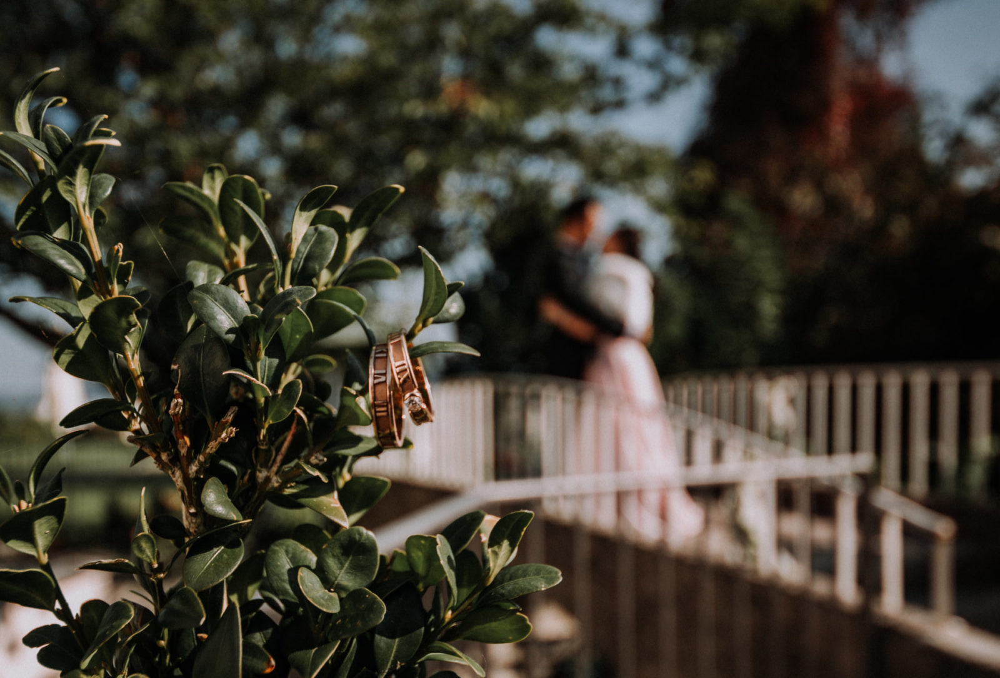

Mauris vitae nisl nec metus placerat perdiet est. Phasellus dapibus semper urna. Pellentesque ornare, orci in consectetuer hendrerit, volutpat.
Pellenteque ornare

Mayr-Melnhof Karton: "Größte Investition der Gruppe in ... Um die Art einer Investition zu bestimmen, kommt es auf das Kriterium an, in welches gegliedert wird. Betrachtet man zum Beispiel den Faktor Zeit, Unternehmen können Sachinvestitionen, Finanzinvestitionen oder immaterielle Investitionen tätigen.
Investition in die Freude der Kinder - Region Kelheim ... Außenfinanzierung. Bei einer Außenfinanzierung bezieht das Unternehmen Kapital direkt der Bank, von Einzelpersonen oder über den Kapitalmarkt.. Beteiligungsfinanzierung - das Kapital wird dem Unternehmen durch Eigentümer als Beteiligung zur Verfügung gestellt.; Kreditfinanzierung - Kapital wird dem Unternehmen für eine bestimmte Dauer überlassen ...
Art Der Investition Stockfotos und -bilder Kaufen - Alamy Art der Investition. Finanzielle Mittel werden bei der Investition verwendet, um Vermögen zu beschaffen. Die Unterteilung des Anlagevermögens in Sachvermögen, Finanzvermögen und immaterielles Vermögen ermöglicht es Investitionen nach der Art des Vermögensgegenstandes auf der Aktivseite der Bilanz zu klassifizieren.
Art der Investition - Englisch-Übersetzung – Linguee ... Corona-Investition: Land hilft Schulen mit 40 Millionen Euro. ... Alle der 4500 Schulen im Land sollen nach Planung des Ministeriums einen grundsätzlichen Betrag in Höhe von 3000 Euro erhalten ...
Investitionsarten | Investition - Welt der BWL Finden Sie das perfekte art der investition-Stockfoto. Riesige Sammlung, hervorragende Auswahl, mehr als 100 Mio. hochwertige und bezahlbare, lizenzfreie sowie lizenzpflichtige Bilder. Keine Registrierung notwendig, einfach kaufen.
Investitionsarten - Erklärung Klassifizierung der nach der Art der Investition aufgegliederten Fonds [...] ergeben sich aus den veröffentlichten Emissionsprospekten, den Geschäftsbedingungen, den Gründungsurkunden, den geltenden Statuten bzw. der geltenden Satzung, Zeichnungspapieren oder Kapitalanlageverträgen, Marketing-Unterlagen oder jeder anderen Erklärung mit ...
Investition - Erklärung | Wiki Arten von Investitionen. Investitionsarten können nach mehreren Kriterien wie Investitionsobjekt, Investitionszweck oder Auswirkung der Investition auf die Rechnungslegung (Aktivierung in der Bilanz oder gewinnmindernde Verbuchung als Aufwand in der Gewinn- und Verlustrechnung) unterschieden werden.. Dabei fällt eine Investition in der Regel unter mehrere Investitionsarten.
Investitionsarten in der Übersicht (inkl. Beispielen) Das bedeutet, die Art und die Verwendung der Investition können bereits einen großen Unterschied machen. Investition des 21.Jahrhunderts. Diesen Unterschied können wir ebenfalls bei einer Investitionsmöglichkeit beobachten, die erst vor wenigen Jahren entstanden ist.
Investition - Die Grundlage für langfristigen Erfolg! VolumeX Art der Investition * Anzahl Rinderstall 40 Schweinestall 11 Geflügelstall (davon mobil) 43 (14) Sonstige Ställe 3 Gewächshäuser 1 Lagerhalle/-räume für landw. Produkte 13 Fahrsiloanlage 28 Wirtschaftsdüngerlager 33 Beregnungstechnik 3 Pflanzenschutztechnik 18 Ausbringungstechnik für Flüssig- und Festmist 22
Finanzierungsarten (BWL) im Überblick - Beispiele ... Funktioniert das Ganze nicht, muss das Unternehmen leider Verluste verzeichnen und die Investition war ein Fehler. Klassische Beispiele für Investitionen sind eine neue Maschine in der Produktion, eine Kampagne für mehr Absatz oder auch Ausgaben für die Weiterbildung der Mitarbeiter, die dadurch langfristig bessere Leistungen erbringen sollen.